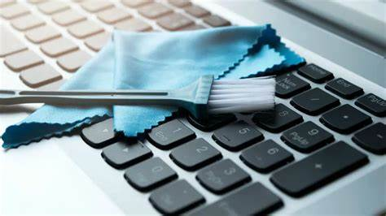

Laptop Maintenance: How to Take Care of Your Portable PC

In today’s world, laptops are more than just tools—they’re lifelines for work, school, entertainment, and staying connected. Whether you use your portable PC for creative projects, online classes, or marathon Netflix sessions, keeping it in good shape is essential for longevity and performance.
Here’s a practical guide to maintaining your laptop and avoiding those dreaded slowdowns and breakdowns.
1. Keep your laptop clean.
Wipe your screen and keyboard with a soft microfiber cloth.
Use compressed air to blow dust out of the keyboard and ports.
Clean the vents regularly to prevent overheating.
2. Take care of your battery.
Avoid keeping your laptop plugged in all the time.
Let the battery drain to around 20–30% before recharging.
Use Battery Saver mode for light tasks.
Keep your laptop away from heat to protect the battery.
3. Update your software.
Install system updates when they’re available.
Update drivers and antivirus software regularly.
Updates fix bugs and improve performance and security.
4. Keep your laptop cool.
Use your laptop on a hard, flat surface.
Avoid soft surfaces like beds or couches.
Consider using a cooling pad if your laptop gets hot.
Do not use your laptop in direct sunlight or hot rooms.
5. Protect your laptop physically.
Use a padded case or sleeve when carrying your laptop.
Keep food and drinks away from your laptop.
Close the lid gently, and never leave objects on the keyboard.
Avoid dropping or bumping your laptop.